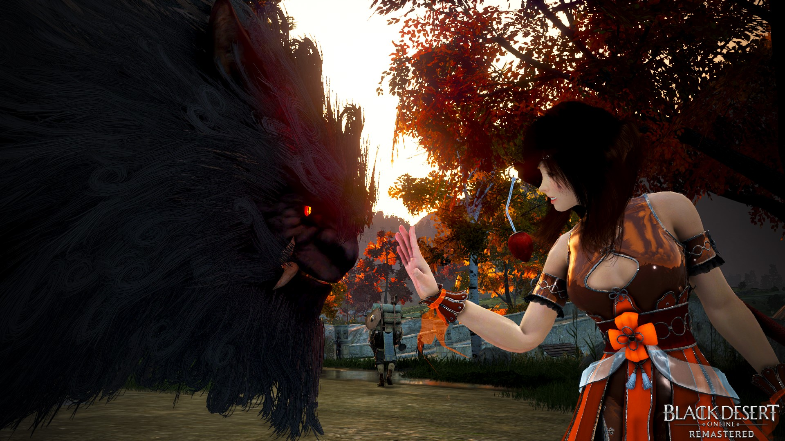

Domadora
Neste site venho apresentar a vocês os prós e os contras da classe Domadora do Black Desert Online.
Aqui vocês entenderão como uma Domadora é e se vale a pena ou não investir seu tempo nessa classe.
Prós
• Muito forte no X1!
• Grind muito bom em spots low tier, por exemplo: Gahaz, Fogans, Nagas.
• Possuí um dos 100% mais fortes do jogo em guerras.
• Possuí o Heilang que além de dividir o dano com você aplica CCs no PvP.
• É LOLI
• ♥ Amorzinho ♥
Contras
• É uma classe muito difícil de se jogar.
• Não tem um grind bem recompensado em spots high tier.
• É fraca no PvP massivo.
• Tem poucos jogadores.
• Necessita de uma gear relativamente alta pra ficar forte.
• A sucessão transformou a classe em uma máquina de apertar WW.
• Além do grind não ser bem recompensado, ele é extremamente cansativo.
Com isso em mente, peço que pensem a fundo sobre esses pontos antes de jogarem com a classe para que não se arrependam depois.